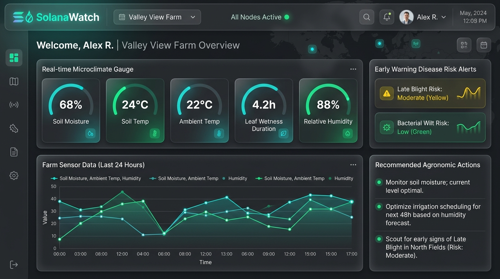

Group 1 (3ITC) • UST College of Information and Computing Sciences (CICS) • Special Term, A/Y 2025–2026
Acquired full ₱7,208 BOM: ESP32 MCU, DHT22 with Stevenson shield, dual DS18B20 soil temp probes, Capacitive v1.2, industrial IP68 RS485 leaf wetness grid, 20W solar PV, MPPT controller, 12.8V LiFePO4 battery (47-day autonomy), and IP66 enclosure.
Initiated breadboard layout, pin mapping, and isolated dual 5V/3.3V power rails. Verified initial 1-Wire, ADC, and RS485 communication lines.
Completed functional PC Web Dashboard (desktop.html) and iOS mobile view (index.html) featuring live microclimate gauges and disease risk calculation.
Accomplished and packaged UST Ethics Review Form 4.2 and Form 7.2 for research protocol compliance and participant safety.
Concurrent 1-Wire, analog ADC, and RS485 lines can cause electrical noise. Separated 5V logic and 3.3V sensor rails via dual buck converters; added 4.7kΩ pull-ups and line filters.
Potential timing contention between MAX485 switching and ESP32 Wi-Fi routines. Dedicated ESP32 Core 1 FreeRTOS task to sensor polling, isolating it from Core 0 network tasks.
ADC variance across Philippine clay-loam Solanaceae soils. Calibrating in controlled oven-dry (0% VWC) and saturated (100% VWC) soil samples.
Finalize physical breadboard wiring harness connecting all 5 sensors to ESP32 and test power delivery from the 12.8V LiFePO4 battery pack.
Implement multi-sensor sampling loops and offline FIFO MicroSD buffer (telemetry_buffer.jsonl) for zero-loss edge storage.
Connect Node.js/Express REST API to Turso libSQL cloud database and link Wallin SV and Hydrothermal risk models.
Execute ice-point (0.0°C) and NaCl humidity chamber (75.3% RH) calibration tests.
SolanaWatch: An IoT-Based Disease Early Warning System for Soil-Grown Solanaceae Crops

ESP32 DevKit V1, DHT22 in Stevenson shield, DS18B20 soil temp, Capacitive v1.2, IP68 RS485 leaf wetness grid, 20W PV + MPPT + 12.8V LiFePO4 battery (47-day autonomy), IP66 enclosure.
Breadboard component layout, pin mapping, isolated 5V & 3.3V power rails, and preliminary sensor communication checks actively progressing.
Real-time telemetry readouts for Soil Moisture (68%), Soil Temp (24°C), Air Temp (22°C), Leaf Wetness (4.2h), and Humidity (88%).
Embedded algorithms for Late Blight (Wallin Severity Values @ LWD >= 10h) and Bacterial Wilt (Hydrothermal Soil Risk Index R_BW).
UST Form 4.2 & Form 7.2 accomplished for research protocol compliance and participant safety.
SolanaWatch_PC_Dashboard.html or SolanaWatch_iOS_App.html